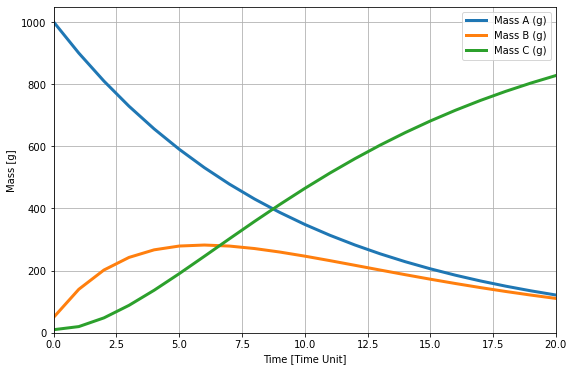
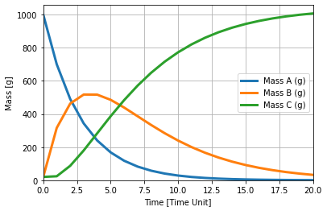

import numpy as np
from scipy.integrate import odeint
import matplotlib.pyplot as plt
import pandas as pd
# Input
n_simulation = 21 # choose the number of simulation
A_0 = 1000.0 # g, mass of A at t=0
B_0 = 50.0 # g, mass of B at t=0
C_0 = 10.0 # g, mass of C at t=0
R_A = 0.1 # g/a, decay rate for A
R_B = 0.2 # g/a, decay rate for B
time = np.arange(n_simulation) # simulation time = number of simulation at 1 (time unit) interval
#initialization
A = np.zeros(n_simulation)
B = np.zeros(n_simulation)
C = np.zeros(n_simulation)
A[0] = A_0
B[0] = B_0
C[0] = C_0
# computation
for i in range(0,n_simulation-1):
A[i+1] = A[i]-R_A*A[i]
B[i+1] = B[i]+R_A*A[i]-R_B*B[i]
C[i+1] = C[i]+R_B*B[i]
summ = A[i]+B[i]+C[i]
# Output
d = {"Mass_A": A, "Mass_B": B, "Mass_C": C, "Total Mass": summ}
df = pd.DataFrame(d) # Generating result table
label = ["Mass A (g)", "Mass B (g)", "Mass C (g)"]
fig = plt.figure(figsize=(9,6))
plt.plot(time, A, time, B, time, C, linewidth=3); # plotting the results
plt.xlabel("Time [Time Unit]"); plt.ylabel("Mass [g]") # placing axis labels
plt.legend(label, loc=0);plt.grid(); plt.xlim([0,20]); plt.ylim(bottom=0) # legends, grids, x,y limits
plt.show() # display plot
df.round(2) #display result table with 2 decimal places

| Mass_A | Mass_B | Mass_C | Total Mass | |
|---|---|---|---|---|
| 0 | 1000.00 | 50.00 | 10.00 | 1060.0 |
| 1 | 900.00 | 140.00 | 20.00 | 1060.0 |
| 2 | 810.00 | 202.00 | 48.00 | 1060.0 |
| 3 | 729.00 | 242.60 | 88.40 | 1060.0 |
| 4 | 656.10 | 266.98 | 136.92 | 1060.0 |
| 5 | 590.49 | 279.19 | 190.32 | 1060.0 |
| 6 | 531.44 | 282.40 | 246.15 | 1060.0 |
| 7 | 478.30 | 279.07 | 302.64 | 1060.0 |
| 8 | 430.47 | 271.08 | 358.45 | 1060.0 |
| 9 | 387.42 | 259.91 | 412.67 | 1060.0 |
| 10 | 348.68 | 246.67 | 464.65 | 1060.0 |
| 11 | 313.81 | 232.21 | 513.98 | 1060.0 |
| 12 | 282.43 | 217.15 | 560.42 | 1060.0 |
| 13 | 254.19 | 201.96 | 603.85 | 1060.0 |
| 14 | 228.77 | 186.99 | 644.25 | 1060.0 |
| 15 | 205.89 | 172.47 | 681.64 | 1060.0 |
| 16 | 185.30 | 158.56 | 716.14 | 1060.0 |
| 17 | 166.77 | 145.38 | 747.85 | 1060.0 |
| 18 | 150.09 | 132.98 | 776.92 | 1060.0 |
| 19 | 135.09 | 121.39 | 803.52 | 1060.0 |
| 20 | 121.58 | 110.62 | 827.80 | 1060.0 |
def mass_bal(n_simulation, MA, MB, MC, R_A, R_B):
A = np.zeros(n_simulation)
B = np.zeros(n_simulation)
C = np.zeros(n_simulation)
for i in range(0,n_simulation-1):
A[0] = MA
B[0] = MB
C[0] = MC
A[i+1] = A[i]-R_A*A[i]
B[i+1] = B[i]+R_A*A[i]-R_B*B[i]
C[i+1] = C[i]+R_B*B[i]
summ = A[i]+B[i]+C[i]
d = {"Mass_A": A, "Mass_B": B, "Mass_C": C, "Total Mass": summ}
df = pd.DataFrame(d) # Generating result table
label = ["Mass A (g)", "Mass B (g)", "Mass C (g)"]
fig = plt.figure(figsize=(6,4))
plt.plot(time, A, time, B, time, C, linewidth=3); # plotting the results
plt.xlabel("Time [Time Unit]"); plt.ylabel("Mass [g]") # placing axis labels
plt.legend(label, loc=0);plt.grid(); plt.xlim([0,20]); plt.ylim(bottom=0) # legends, grids, x,y limits
plt.show() # display plot
return df.round(2)
mass_bal(21,1000, 20, 20, 0.3, 0.2)

| Mass_A | Mass_B | Mass_C | Total Mass | |
|---|---|---|---|---|
| 0 | 1000.00 | 20.00 | 20.00 | 1040.0 |
| 1 | 700.00 | 316.00 | 24.00 | 1040.0 |
| 2 | 490.00 | 462.80 | 87.20 | 1040.0 |
| 3 | 343.00 | 517.24 | 179.76 | 1040.0 |
| 4 | 240.10 | 516.69 | 283.21 | 1040.0 |
| 5 | 168.07 | 485.38 | 386.55 | 1040.0 |
| 6 | 117.65 | 438.73 | 483.62 | 1040.0 |
| 7 | 82.35 | 386.28 | 571.37 | 1040.0 |
| 8 | 57.65 | 333.73 | 648.62 | 1040.0 |
| 9 | 40.35 | 284.28 | 715.37 | 1040.0 |
| 10 | 28.25 | 239.53 | 772.23 | 1040.0 |
| 11 | 19.77 | 200.10 | 820.13 | 1040.0 |
| 12 | 13.84 | 166.01 | 860.15 | 1040.0 |
| 13 | 9.69 | 136.96 | 893.35 | 1040.0 |
| 14 | 6.78 | 112.47 | 920.74 | 1040.0 |
| 15 | 4.75 | 92.01 | 943.24 | 1040.0 |
| 16 | 3.32 | 75.04 | 961.64 | 1040.0 |
| 17 | 2.33 | 61.03 | 976.65 | 1040.0 |
| 18 | 1.63 | 49.52 | 988.85 | 1040.0 |
| 19 | 1.14 | 40.10 | 998.76 | 1040.0 |
| 20 | 0.80 | 32.42 | 1006.78 | 1040.0 |